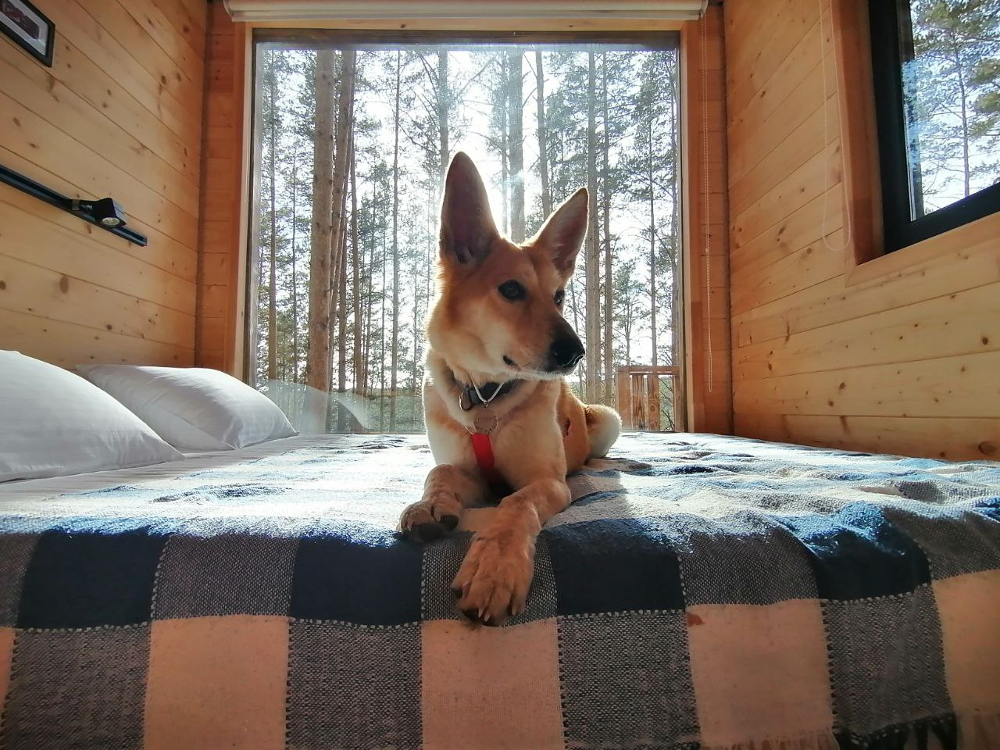

Адресник для питомца
Оформить заказ
Заполнить форму
на связи
telegram
adresnik196@yandex.ru
vk
Помогаем БФ Зоозащита
сайт фонда
Адресник ускорит процесс возвращения домой

QA Engineer-Кристина Сойкина